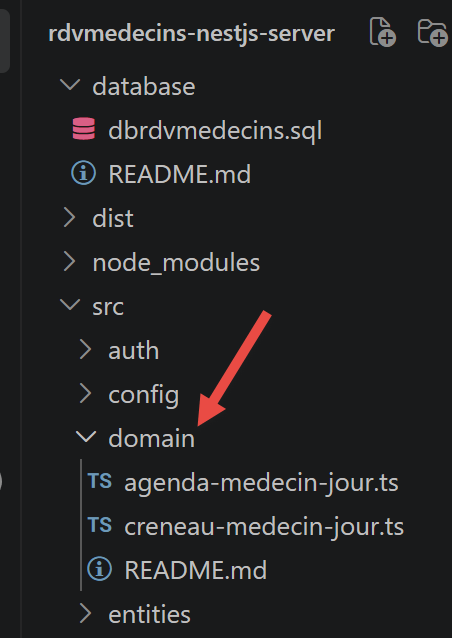
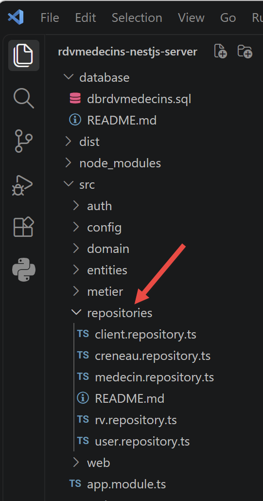
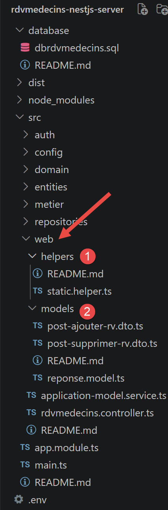
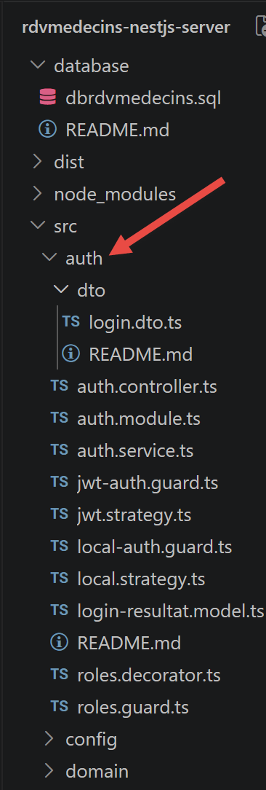
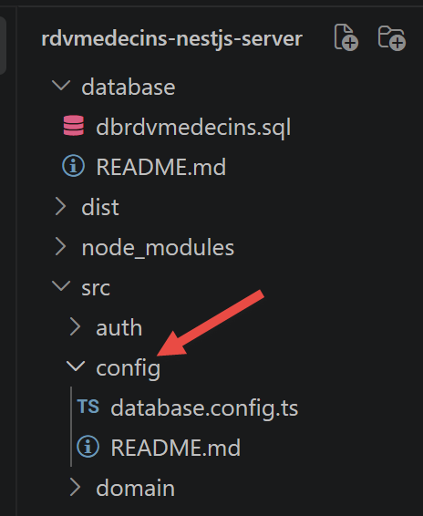
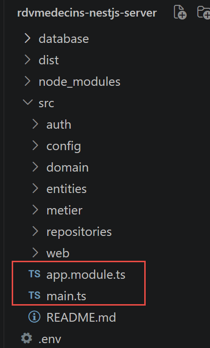

4. Chapitre 3 - Le serveur [NestJS] de l’application [RdvMedecins]
Ce chapitre détaille, fichier par fichier, le contenu du dossier [rdvmedecins-nestjs-server] livré avec ce document. On y retrouve la présentation adoptée dans tout ce cours : le code source, numéroté ligne à ligne, suivi d’un paragraphe « Commentons ce code : » qui revient sur les lignes qui méritent une explication. Chaque dossier du projet contient par ailleurs son propre README.md, qui reprend une version condensée de ces explications.
4.1. La base de données
La base de données [dbrdvmedecins] reprend, dans sa structure, celle du document original (2014, Spring 4 / [MySQL] 5) : mêmes tables [medecins], [clients], [creneaux], [rv], mêmes clés étrangères, même contrainte d’unicité. Seule nouveauté, apportée par l’étape « authentification » de ce portage : la table [users].
4.1.1. [database/dbrdvmedecins.sql]
Commentons ce code :
- lignes 20-24 : [DROP TABLE IF EXISTS …] — le script repart d’une base vide à chaque exécution, dans l’ordre inverse des dépendances (rv d’abord, qui référence [creneaux] et clients, jusqu’à users, qui n’est référencée par personne) : [MySQL] refuserait de supprimer une table encore référencée par une clé étrangère ;
- ligne 48 : [id_medecin INT NOT NULL] puis ligne 53 : [CONSTRAINT fk_creneaux_medecin FOREIGN KEY …] — un créneau appartient toujours à un médecin ;
- ligne 64 : [CONSTRAINT unq1_rv UNIQUE (jour, id_creneau)] — la règle de gestion centrale de l’application : un même créneau, un même jour, ne peut être réservé qu’une seule fois. C’est cette contrainte, et elle seule, qui empêche un double rendez-vous - ni le contrôleur ni la couche métier ne la revérifient explicitement (cf. plus loin, ajouterRv) ;
- lignes 67-74 : [CREATE TABLE users (…)] — la table ajoutée par cette étape. login est UNIQUE (deux utilisateurs ne peuvent pas partager le même identifiant de connexion) ; password stocke un mot de passe haché par bcrypt (jamais en clair) ; role vaut 'ADMIN' ou 'USER' - une simple colonne texte, là où le document original utilisait trois tables (users, roles, users_roles) pour autoriser plusieurs rôles par utilisateur. Cette application n’ayant besoin que de deux rôles mutuellement exclusifs, la relation plusieurs-à-plusieurs d’origine seraît allé au-delà du nécessaire ;
- lignes 91-93 : [INSERT INTO users …] — deux comptes de démonstration, admin/admin (rôle ADMIN) et user/user (rôle USER), avec leurs mots de passe déjà hachés par bcrypt (10 tours de salage) - jamais en clair, y compris dans ce script de démonstration.
4.2. Organisation en couches
Le serveur reprend le découpage en couches du projet original :

Chaque couche ne parle qu’à la couche immédiatement à sa droite [5-8] : ainsi le contrôleur [5] ne parle jamais directement à la couche [7], par exemple. C’est la même discipline que le projet Spring original, et elle rend chaque couche remplaçable indépendamment des autres.
4.3. Les entités [TypeORM] (src/entities/)
Les entités sont les classes qui représentent les lignes des tables de la base de données sous forme d’objets TypeScript - l’équivalent direct des entités JPA du projet original (package rdvmedecins.entities).
4.3.1. src/entities/abstract.entity.ts

Commentons ce code :
- ligne 4 : [@PrimaryGeneratedColumn()] — déclare une clé primaire auto-incrémentée par le SGBD - l’équivalent exact de @Id + @GeneratedValue(strategy = GenerationType.AUTO) en JPA ;
- ligne 7 : [@VersionColumn()] — le mécanisme natif de [TypeORM] pour le verrouillage optimiste : [TypeORM] incrémente automatiquement cette colonne à chaque modification, et lève une erreur si on tente de sauvegarder une entité dont la version ne correspond plus à celle en base (quelqu’un d’autre l’a modifiée entre-temps) - l’équivalent exact de @Version en JPA/Hibernate ;
- ligne 3 : [export abstract class AbstractEntity {] — cette classe n’est pas décorée par [@Entity] : elle ne correspond à aucune table à elle seule. [TypeORM] appelle cette technique la « Concrete Table Inheritance » : chaque sous-classe décorée par [@Entity] obtient sa propre table, avec toutes les colonnes héritées - l’équivalent exact de @MappedSuperclass en JPA.
4.3.2. src/entities/personne.entity.ts
Commentons ce code :
- ligne 4 : [export abstract class Personne extends AbstractEntity {] — regroupe les champs communs à un médecin et à un patient (titre, nom, prenom), tout en héritant de id/version ([AbstractEntity]). Comme sa classe mère, elle n’est pas décorée par [@Entity] : c’est le pendant [TypeORM] de la classe [Personne], elle aussi @MappedSuperclass, du projet original ;
- lignes 5, 8, 11 : [@Column({ length: N })] — trois colonnes texte de longueur bornée, équivalent de [@Column](length = N) private String ... en JPA.
4.3.3. src/entities/medecin.entity.ts
Commentons ce code :
- ligne 5 : [@Entity({ name: 'medecins' })] — déclare la classe comme entité [TypeORM], persistée dans la table [medecins] - l’équivalent exact de [@Entity] + @Table(name = "[medecins]") en JPA ;
- ligne 6 : [export class Medecin extends Personne {] — hérite de titre/nom/prenom (venus de [Personne]) et de id/version (venus de [AbstractEntity]), sans avoir à les redéclarer ;
- ligne 7 : [@OneToMany(() => Creneau, (creneau) => creneau.medecin)] — déclare la relation inverse « un médecin a plusieurs créneaux » : une commodité de navigation, absente du projet original (qui ne la déclarait que dans l’autre sens, côté [Creneau]), mais gratuite à ajouter avec TypeORM.
4.3.4. src/entities/client.entity.ts
Commentons ce code :
- ligne 4-5 : [@Entity({ name: 'clients' }) export class Client extends Personne {}] — rigoureusement le même principe que [Medecin], sans relation supplémentaire : une table [clients], les mêmes trois colonnes héritées de Personne. Rappel de vocabulaire : [Client] désigne ici un patient du cabinet médical (vocabulaire du domaine métier original), à ne pas confondre avec « client HTTP ».
4.3.5. src/entities/creneau.entity.ts
Commentons ce code :
- lignes 7-10 : [@Column() hdebut: number; …] — les quatre bornes du créneau (heure/minute de début et de fin), quatre entiers simples ;
- ligne 12 : [@ManyToOne(() => Medecin, (medecin) => medecin.creneaux)] — plusieurs créneaux appartiennent à un même médecin. Par défaut, [TypeORM] ne charge pas la relation medecin quand on lit un créneau (comportement « lazy » par défaut) : il faut le demander explicitement (option relations: [...] d’une requête) - exactement comme FetchType.LAZY imposait, côté JPA, un left join fetch explicite dans la requête JPQL pour ramener le médecin ;
- ligne 13 : [@JoinColumn({ name: 'id_medecin' })] — précise le nom de la colonne clé étrangère dans la table [creneaux] ;
- ligne 16 : [@RelationId((creneau: Creneau) => creneau.medecin)] — l’équivalent exact et idiomatique, côté [TypeORM], du champ idMedecin en lecture seule du projet original ([@Column](name = "id_medecin", insertable = false, updatable = false)) : il expose directement la valeur de la clé étrangère, sans avoir besoin de charger l’entité [Medecin] complète - pratique pour construire des réponses JSON légères (cf. plus loin, la couche web).
Point d’attention : un champ [@RelationId] est une colonne virtuelle, calculée après coup par [TypeORM] - ce n’est pas une vraie colonne SQL qu’on peut utiliser dans une clause WHERE d’un « query builder » (cf. plus loin, [CreneauRepository]). Il sert uniquement à lire la valeur de la clé étrangère une fois l’entité chargée.
4.3.6. src/entities/rv.entity.ts
Commentons ce code :
- ligne 7 : [@Unique('unq1_rv', ['jour', 'creneau'])] — rappelle, côté [TypeORM], la contrainte SQL du script de base de données. Attention : on référence ici le nom de la relation ('creneau'), pas le champ [@RelationId] ('idCreneau') - ce dernier est une colonne virtuelle, que [TypeORM] n’accepte pas dans une contrainte @Unique. [TypeORM] traduit lui-même 'creneau' vers sa colonne de clé étrangère réelle (id_creneau) ;
- ligne 9 : [@Column({ type: 'date' })] — type 'date' (et non 'datetime') : on ne conserve que le jour, pas l’heure - exactement comme TemporalType.DATE le précisait côté JPA ;
- lignes 12-18 : [@ManyToOne(...) / @JoinColumn(...)] — deux relations, vers [Client] et vers [Creneau], sur le même principe que [creneau.entity.ts] ;
- lignes 20-24 : [@RelationId(...)] — les équivalents des champs idClient/idCreneau en lecture seule du projet original (même mécanisme que Creneau.idMedecin, cf. ci-dessus).
4.3.7. src/entities/user.entity.ts
Commentons ce code :
- ligne 4 : [export type Role = ‘ADMIN’ | ‘USER’;] — une simple union de deux chaînes de caractères TypeScript : les deux seuls rôles gérés par l’application. Ce type est réutilisé partout ailleurs où un rôle est manipulé (roles.decorator.ts, jwt.strategy.ts, le client [React]…) ;
- ligne 6 : [@Entity({ name: 'users' })] — comme les autres entités, une table dédiée ;
- ligne 11 : [password: string;] — stocke un mot de passe haché (bcrypt), jamais en clair - cf. auth.service.ts ;
- ligne 17 : [role: Role;] — une seule colonne, plutôt que la relation plusieurs-à-plusieurs (users/roles/users_roles) du projet Spring original. Cette application ne connaît que deux rôles mutuellement exclusifs (un utilisateur est ADMIN, ou bien USER, jamais les deux) : reconstruire la relation d’origine aurait ajouté de la complexité sans bénéfice réel. C’est une simplification pédagogique assumée, au même titre que l’énumération [StatutReponse] déjà rencontrée plus loin dans ce chapitre.
4.4. Les objets métier (src/domain/)

Ces classes ne correspondent à aucune table de la base de données : elles sont construites à la volée, en combinant plusieurs entités, pour représenter un concept utile à l’application (« l’agenda du docteur Pelissier pour le 13/09/2026 ») mais qui n’a pas besoin d’être stocké tel quel. Équivalent du même sous-dossier domain (ou paquetage) du projet original.
4.4.1. src/domain/creneau-medecin-jour.ts
Commentons ce code :
- ligne 4 : [export class CreneauMedecinJour {] — associe un créneau horaire au rendez-vous éventuellement pris sur ce créneau, pour un jour donné ;
- lignes 5-8 : [constructor(public creneau: Creneau, public rv: Rv | null) {}] — la syntaxe [public] directement dans les paramètres du constructeur est un raccourci TypeScript : elle déclare ET initialise les deux propriétés en une seule ligne chacune, sans avoir à écrire [this.creneau = creneau] séparément. [rv] vaut null quand le créneau est libre.
4.4.2. src/domain/agenda-medecin-jour.ts
Commentons ce code :
- ligne 4 : [export class AgendaMedecinJour {] — l’agenda complet d’un médecin pour un jour donné : le médecin concerné, le jour, et la liste de ses créneaux (chacun libre ou occupé, cf. [CreneauMedecinJour] ci-dessus) ;
- ligne 8 : [public creneauxMedecinJour: CreneauMedecinJour[],] — calculée par [MetierService.getAgendaMedecinJour] (cf. plus loin), c’est cette liste que le contrôleur transforme en JSON pour le client [React].
4.5. La couche DAO (src/repositories/)
La couche DAO (Data Access Object) est le seul endroit du projet qui parle directement à TypeORM/MySQL - l’équivalent des interfaces Spring Data du projet original (package rdvmedecins.repositories).

La différence la plus importante à comprendre entre Spring Data et [TypeORM] : avec Spring Data, il suffisait de déclarer une interface (extends CrudRepository<...>) pour obtenir gratuitement les méthodes de base (findAll, findOne, save, delete…) - Spring générait lui-même, au démarrage, une classe qui l’implémentait. Avec [TypeORM], il n’y a pas de génération automatique d’implémentation à partir d’une interface : on injecte directement le Repository<Entité> générique fourni par [TypeORM] (via [@InjectRepository]), et on écrit soi-même les méthodes qu’on veut exposer, en s’appuyant sur celles déjà prêtes de ce Repository, ou sur le query builder pour des requêtes plus spécifiques.
4.5.1. src/repositories/medecin.repository.ts
Commentons ce code :
- ligne 9 : [@InjectRepository(Medecin)] — demande à [NestJS] de fournir le Repository<[Medecin]> généré automatiquement par [TypeORM] pour l’entité Medecin. C’est l’équivalent de l’injection automatique (@Autowired) de l’implémentation générée par Spring Data ;
- ligne 14 : [return this.repository.find();] — équivalent de medecinRepository.findAll() hérité de CrudRepository ;
- ligne 18 : [return this.repository.findOneBy({ id });] — équivalent de medecinRepository.findOne(id) ; renvoie null si aucun médecin ne porte cet identifiant (comme findOne en Spring Data, plutôt qu’une exception).
4.5.2. src/repositories/client.repository.ts
Ce fichier est rigoureusement identique dans son principe à [MedecinRepository] (voir ses explications ci-dessus), appliqué à l’entité [Client] (un patient).
4.5.3. src/repositories/creneau.repository.ts
Commentons ce code :
- lignes 13-19 : [findAll() / findById(id)] — identiques au principe déjà vu dans [MedecinRepository] ;
- ligne 21 : [getAllCreneaux(idMedecin: number): Promise<Creneau[]> {] — une requête « sur mesure », équivalente de la requête JPQL originale select c from [Creneau] c where c.medecin.[id]=?1 ;
- ligne 23 : [.createQueryBuilder(‘c’)] — on nomme l’alias SQL c, comme [Creneau] c en JPQL ;
- ligne 24 : [.where(‘c.medecin = :idMedecin’, { idMedecin })] — on compare ici la relation elle-même (c.medecin), pas le champ [@RelationId] (c.idMedecin) : comme signalé plus haut (creneau.entity.ts), ce dernier n’est pas une colonne utilisable dans un WHERE. En comparant la relation à un nombre, [TypeORM] comprend qu’on vise sa clé étrangère et génère le bon SQL, sans jointure ;
- lignes 25-26 : [.orderBy(‘c.hdebut’, ‘ASC’).addOrderBy(‘c.mdebut’, ‘ASC’)] — trie les créneaux dans l’ordre chronologique, un ajout pratique qui n’existait pas explicitement dans la version Spring d’origine.
4.5.4. src/repositories/rv.repository.ts
Commentons ce code :
- lignes 13-18 : [findById(id) { … relations: [‘client’, ‘creneau’] }] — relations: [...] demande explicitement à [TypeORM] de charger aussi le client et le créneau liés (rappel : ces relations sont en mode « lazy » par défaut, cf. creneau.entity.ts) - utile pour construire la réponse JSON (cf. plus loin, getMapForRv) ;
- ligne 21 : [return this.repository.save(rv);] — équivalent de rvRepository.save(new Rv(jour, client, créneau)) ;
- ligne 25 : [await this.repository.delete(id);] — équivalent de rvRepository.delete(rv.getId()) ;
- ligne 28 : [getRvMedecinJour(idMedecin: number, jour: string): Promise<Rv[]> {] — équivalente de la requête JPQL originale select rv from Rv rv left join fetch rv.client c left join fetch rv.creneau cr where cr.medecin.[id]=?1 and rv.[jour]=?2 ;
- lignes 31-32 : [.leftJoinAndSelect(‘rv.client’, ‘client’) / .leftJoinAndSelect(‘rv.creneau’, ‘creneau’)] — l’équivalent du left join fetch du JPQL original : ramène, en une seule requête SQL, le client et le créneau liés à chaque rendez-vous ;
- ligne 33 : [.where(‘creneau.medecin = :idMedecin’, { idMedecin })] — condition sur le médecin, obtenue via la jointure sur creneau (rv.creneau.medecin.[id]=?1 en JPQL) - à nouveau, on compare la relation medecin, pas le champ [@RelationId] correspondant.
4.5.5. src/repositories/user.repository.ts
Commentons ce code :
- ligne 13 : [findByLogin(login: string): Promise<User | null> {] — seule méthode de recherche nécessaire ici, utilisée par la connexion (cf. auth.service.ts) : elle remplace la recherche par rôles à travers trois tables du projet original, devenue inutile depuis la simplification à une seule colonne [role] (cf. user.entity.ts).
4.6. La couche métier (src/metier/)
C’est ici, et nulle part ailleurs, que vivent les règles de gestion de l’application - équivalent du package rdvmedecins.metier du projet original.
4.6.1. src/metier/metier.interface.ts
Commentons ce code :
- ligne 7 : [export interface IMetier {] — le contrat de la couche métier, indépendant de son implémentation - l’équivalent exact de l’interface Java [IMetier] du projet original ;
- lignes 8-18 : onze méthodes, une par besoin de l’application (listes, recherches par id, ajout/suppression de rendez-vous, calcul de l’agenda) ;
- ligne 21 : [export const METIER_TOKEN = ‘IMetier’;] — on définit un « jeton » d’injection (InjectionToken) pour pouvoir injecter cette interface dans le contrôleur, exactement comme Spring injectait la référence [IMetier] métier sans connaître sa classe d’implémentation concrète [Metier]. En TypeScript, les interfaces disparaissent à la compilation : on ne peut donc pas les utiliser directement comme jeton d’injection [NestJS], il faut ce détour (cf. son utilisation dans app.module.ts et application-model.service.ts).
4.6.2. src/metier/metier.service.ts
Commentons ce code :
- ligne 10 : [export class MetierService implements IMetier {] — [@Injectable]() est l’équivalent de @Service("métier") : cette classe devient un « provider » [NestJS] que [NestJS] sait construire et injecter là où on en a besoin ;
- lignes 11-16 : [constructor(private readonly medecinRepository: …, …) {}] — injection des quatre DAO, équivalent des quatre champs @Autowired du projet original. [NestJS] choisit ici l’injection par le constructeur plutôt que par le champ (comme le fait @Autowired sur un champ Java) : c’est la manière recommandée en TypeScript, elle rend les dépendances explicites et facilite les tests ;
- lignes 18-23 : la plupart des méthodes se contentent de déléguer à la couche DAO - aucune règle de gestion propre ;
- lignes 25-31 : [ajouterRv(…) { const rv = new Rv(); … }] — construit une nouvelle entité Rv et la sauvegarde ; c’est la contrainte SQL unq1_rv (cf. plus haut, le script de base de données), et elle seule, qui empêche une double réservation - aucune vérification explicite n’est faite ici, une tentative en double provoquera une exception SQL, remontée par la couche DAO ;
- ligne 37 : [async getAgendaMedecinJour(idMedecin: number, jour: string): Promise<AgendaMedecinJour | null> {] — la seule méthode de la couche métier qui fait un véritable traitement métier (les autres ne font que déléguer) : elle calcule l’agenda complet d’un médecin pour un jour donné. L’algorithme est repris à l’identique du document original, en trois temps ;
- ligne 42 : [const creneauxHoraires = await this.getAllCreneaux(idMedecin);] — 1. on récupère tous les créneaux horaires du médecin ;
- ligne 43 : [const reservations = await this.getRvMedecinJour(idMedecin, jour);] — 2. on récupère tous ses rendez-vous pour le jour demandé ;
- lignes 45-48 : [const hReservations = new Map<number, Rv>(); …] — on range ces rendez-vous dans un dictionnaire indexé par l’identifiant du créneau, pour les retrouver rapidement à l’étape suivante - équivalent du Map<Long, Rv> hReservations du code original ;
- lignes 50-53 : [const creneauxMedecinJour = creneauxHoraires.map((creneau) => { … })] — 3. pour chaque créneau, on regarde s’il correspond à l’une des réservations trouvées : si oui, il est « occupé » (on lui associe le rendez-vous trouvé) ; sinon, il est « libre » (rv = null).
4.7. La couche web (src/web/)
C’est le point d’entrée HTTP de l’application - l’équivalent du package [rdvmedecins.web] du projet original.

4.7.1. src/web/models/reponse.model.ts
Commentons ce code :
- lignes 1-6 : [export enum StatutReponse { … }] — le projet Spring original utilisait des nombres « ad hoc » (0, 1, 2, 3, 4…) dont la signification changeait d’une méthode du contrôleur à l’autre. Ce portage en profite pour rassembler tous les codes possibles dans une énumération unique, plus simple à apprendre et à maintenir : le comportement observable pour le client (0 = succès, autre chose = échec) reste rigoureusement identique ;
- ligne 8 : [export class Reponse<T = unknown> {] — l’enveloppe commune à toutes les réponses JSON du service web : { "status": 0, "data": ... }. Nouveauté par rapport à l’original : cette classe est générique ([Reponse]<T>) grâce à TypeScript, pour que le type de data soit connu à la compilation (ex : [Reponse]<[Medecin][]>) - le langage Java du projet original ne permettait pas cela aussi simplement avec un type Object ;
- lignes 17-19 : [static ok(data: T): Reponse {] — petite méthode « fabrique » statique, pour écrire un code de contrôleur plus lisible (Reponse.ok([medecins]) plutôt que new [Reponse](StatutReponse.OK, [medecins])) ;
- lignes 21-23 : [static erreur<T = unknown>(status: StatutReponse, data: T | null = null): Reponse {] — son pendant pour les réponses d’erreur.
4.7.2. src/web/models/post-ajouter-rv.dto.ts
Commentons ce code :
- ligne 3 : [export class PostAjouterRvDto {] — décrit la forme du corps JSON attendu par la route /ajouterRv ({ jour, idClient, idCreneau }) - un « DTO » (Data Transfer Object), une classe dont le seul rôle est de décrire la forme des données échangées, sans aucune logique ;
- ligne 4 : [@IsDateString()] — vérifie que la chaîne reçue est bien une date valide au format ISO. Si ce n’est pas le cas, [NestJS] renvoie automatiquement une erreur HTTP 400 (Bad [Request]) avant d’exécuter le contrôleur - grâce au [ValidationPipe] global déclaré dans [main.ts] (cf. plus loin) ;
- lignes 7, 10 : [@IsInt()] — vérifie que la valeur reçue est bien un nombre entier. Ces décorateurs, combinés au [ValidationPipe], sont l’équivalent [NestJS] des changements de type automatiques que Spring MVC effectuait avec @RequestBody.
4.7.3. src/web/models/post-supprimer-rv.dto.ts
Même principe que [PostAjouterRvDto] ci-dessus, pour le corps JSON attendu par /supprimerRv ({ idRv }).
4.7.4. src/web/helpers/static.helper.ts
Commentons ce code :
- ligne 4 : [export function getErreursForException(exception: unknown): string[] {] — équivalent de Static.getErreursForException(Exception exception). Java pouvait chaîner des exceptions (exception.getCause()) pour expliquer « pourquoi » une exception s’est produite ; en JavaScript/TypeScript moderne (ES2022), les erreurs disposent elles aussi d’une chaîne de causes, via la propriété cause ;
- lignes 6-10 : [while (cause instanceof Error) { … cause = cause.cause; }] — on la parcourt de la même façon que le code Java d’origine, en empilant chaque message rencontré ;
- lignes 17-19 : [export interface CreneauJson { … }] — on ne renvoie pas l’entité [Creneau] telle quelle en JSON : elle contient une relation vers medecin qui, si elle était chargée, dupliquerait des informations déjà connues du client (celui-ci sait déjà de quel médecin il parle, cf. le paramètre {idMedecin} de l’URL). On construit donc un objet « sur mesure », ne contenant que les champs utiles à l’affichage ;
- ligne 21 : [export function getMapForCreneau(creneau: Creneau | null | undefined): CreneauJson | null {] — équivalent de Static.getMapForCreneau([Creneau] créneau) : transforme une entité en objet JSON léger ;
- ligne 29 : [export function getListMapForCreneaux(creneaux: Creneau[]): CreneauJson[] {] — son pendant pour une liste entière (équivalent de Static.getListMapForCreneaux) ;
- lignes 33-38, 40-50, 52-54 : [RvJson / getMapForRv / getListMapForRvs] — même principe, appliqué aux rendez-vous : le client embarqué (rv.client) est lui aussi réduit à ses seuls champs utiles à l’affichage.
4.7.5. src/web/application-model.service.ts
Commentons ce code :
- ligne 6 : [export class ApplicationModelService implements IMetier, OnModuleInit {] — équivalent de la classe ApplicationModel du projet original : un cache, construit une seule fois au démarrage du serveur, qui garde en mémoire la liste des médecins et des clients (des listes courtes, peu changeantes, qu’il est inutile de redemander à la base à chaque requête). Cette classe joue deux rôles, exactement comme l’original : cache d’un côté, point d’entrée unique du contrôleur vers la couche métier de l’autre - si on change un jour la stratégie de cache, seul ce fichier est à modifier ;
- ligne 11 : [constructor(@Inject(METIER_TOKEN) private readonly metier: IMetier) {}] — on injecte ici l’interface [IMetier] (via le jeton [METIER_TOKEN], cf. app.module.ts), pas la classe concrète [MetierService] - exactement comme le code Java original écrivait @Autowired private [IMetier] métier; sans jamais mentionner la classe Metier ;
- ligne 13 : [async onModuleInit(): Promise<void> {] — [OnModuleInit] est l’interface « cycle de vie » de [NestJS] qui joue exactement le même rôle que @PostConstruct en Spring : onModuleInit() est appelée automatiquement par [NestJS] juste après que toutes les dépendances de cette classe ont été injectées ;
- lignes 17-18 : [catch (ex) { this.messages = getErreursForException(ex); }] — si la base de données est indisponible au démarrage, l’erreur est capturée et stockée dans messages, plutôt que de faire planter le serveur - exactement le comportement du projet original ;
- ligne 26 : [async getAllClients(): Promise<Client[]> { return this.clients; }] — les listes de médecins et de clients viennent du cache ; tout le reste (ligne 29 et suivantes) est simplement délégué à la couche métier.
4.7.6. src/web/rdvmedecins.controller.ts
RdvMedecinsController déclare les onze routes de l’application, volontairement identiques à celles du document original (/getAllMedecins, /ajouterRv…) plutôt que « modernisées » en style REST (/medecins, /clients/:id…) - l’objectif de ce document est de comparer les deux implémentations, pas de moderniser l’API.
1 2 3 4 5 6 7 8 9 10 11 12 13 14 15 16 17 18 19 20 21 22 23 24 25 26 27 28 29 30 31 32 33 34 35 36 37 38 39 40 41 42 43 44 45 46 47 48 49 50 51 52 53 54 55 56 57 58 59 60 61 62 63 64 65 66 67 68 69 70 71 72 73 74 75 76 77 78 79 80 81 82 83 84 85 86 87 88 89 90 91 92 93 94 95 96 97 98 99 100 101 102 103 104 105 106 107 108 109 110 111 112 113 114 115 116 117 118 | |
Commentons ce code :
- ligne 12 : [@UseGuards(JwtAuthGuard)] — posé sur la classe, protège les onze routes de ce contrôleur d’un coup : aucune n’est accessible sans un jeton JWT valide (cf. plus loin, le chapitre « Authentification »). C’est l’équivalent de la règle Spring Security originale .antMatchers("/**").hasRole("ADMIN"), à ceci près qu’ici on exige seulement d’être authentifié (n’importe quel rôle) - la restriction au rôle ADMIN n’est posée qu’aux deux routes qui modifient des données (lignes 75-76 et 95-96) ;
- ligne 13 : [@Controller()] — sans préfixe : les routes sont donc exactement /getAllMedecins, /getAllClients, etc. C’est l’équivalent de @RestController en Spring : chaque valeur rendue par une méthode est automatiquement sérialisée en JSON ;
- ligne 15 : [constructor(private readonly application: ApplicationModelService) {}] — injection du cache/façade, équivalent de @Autowired private ApplicationModel application; ;
- lignes 19-22 : [const messages = this.application.getMessages(); if (messages !== null) { … }] — on vérifie d’abord que l’application s’est correctement initialisée (cf. ApplicationModelService.onModuleInit), équivalent de if (messages != null) { return new [Reponse](-1, messages); } ;
- ligne 33 : [async getAllCreneaux(@Param('idMedecin') idMedecin: string) {] — [@Param]('idMedecin') récupère le morceau {idMedecin} de l’URL, sous forme de chaîne de caractères (comme @PathVariable(String) en Spring) ; on la convertit nous-mêmes en nombre (ligne 34), là où Spring le faisait automatiquement pour un paramètre déclaré long ;
- lignes 35-38 : [const medecin = await this.application.getMedecinById(id); if (medecin === null) { … }] — on récupère d’abord le médecin pour vérifier qu’il existe, avant d’aller plus loin (équivalent de la méthode privée getMedecin(id) du contrôleur original) ;
- ligne 41 : [return Reponse.ok(getListMapForCreneaux(creneaux));] — transforme la liste d’entités [Creneau] en une liste d’objets JavaScript « légers » (cf. static.helper.ts) ;
- ligne 59 : [return Reponse.ok({ medecin: …, jour: …, creneaux: … });] — on met l’agenda en forme « légère » pour le JSON, mêmes principes que getMapForCreneau/getMapForRv ;
- ligne 75 : [@UseGuards(RolesGuard)] puis ligne 76 : [@Roles('ADMIN')] — en plus d’être authentifié (déjà exigé par [@UseGuards]([JwtAuthGuard]) sur la classe), il faut ici avoir le rôle ADMIN - le rôle USER se voit répondre 403 Forbidden (cf. roles.guard.ts). [RolesGuard] lit request.user (déposé par JwtAuthGuard/JwtStrategy) : il s’exécute donc forcément après [JwtAuthGuard] ([NestJS] applique d’abord les gardes de classe, puis ceux de méthode, dans l’ordre où ils apparaissent) ;
- lignes 87-92 : [try { const rv = await this.application.ajouterRv(…); … } catch (e) { … }] — à ce stade, class-validator (cf. [PostAjouterRvDto]) a déjà vérifié que post.[jour] est une date valide et que post.idClient/post.idCreneau sont bien des nombres entiers. La contrainte SQL unq1_rv (jour, id_creneau) empêche deux réservations sur le même créneau le même jour : une tentative en double provoquera une exception, attrapée ici, exactement comme le SQLException du pilote JDBC original ;
- ligne 95 : même restriction que ligne 75, pour supprimerRv : seul le rôle ADMIN peut annuler un rendez-vous ;
- ligne 112 : [function estUneDateValide(jour: string): boolean {] — petite fonction utilitaire locale, équivalent du couple SimpleDateFormat("yyyy-MM-dd") + setLenient(false) du code original, qui refusait par exemple « 2026-13-40 » (mois et jour impossibles) : Date.toISOString() reconstruit la date à partir de la chaîne reçue - si elle diffère de l’entrée, c’est que la date n’existait pas.
4.8. Authentification (src/auth/)

Cette section documente l’ajout, à cette étape du cours, de l’authentification par jetons JWT et du contrôle d’accès par rôles (ADMIN/USER) - l’équivalent fonctionnel de la couche Spring Security du document original, réécrite avec les outils standards de l’écosystème [NestJS] : [@nestjs/passport] et @nestjs/jwt.
Deux différences assumées avec le projet original, documentées ici une bonne fois pour toutes :
- JWT plutôt que HTTP Basic. Le projet Spring original envoyait, à chaque requête, l’entête Authorization: Basic <login:password en Base64> : le mot de passe (encodé, pas chiffré) transitait donc sur le réseau à chaque appel. Ce portage utilise à la place un jeton JWT (JSON Web Token) : le mot de passe n’est présenté qu’une seule fois, à la connexion (POST /login) ; le serveur renvoie alors un jeton signé, que le client représente ensuite à chaque requête suivante (entête Authorization: Bearer <jeton>). C’est la pratique actuelle pour ce genre d’API, déjà annoncée dans la conclusion du chapitre précédent.
- Un seul rôle par utilisateur, une seule colonne en base, plutôt que la relation plusieurs-à-plusieurs (users/roles/users_roles) du projet original - cf. user.entity.ts plus haut.
Un point d’architecture à comprendre avant de lire le code qui suit : quand un garde (Guard) rejette une requête (401 Unauthorized, 403 Forbidden), la réponse ne passe jamais par l’enveloppe [Reponse]<T> habituelle ({ status, data }) : [NestJS] répond directement avec sa forme JSON native, { statusCode, message, error }. C’est un choix délibéré : les erreurs de sécurité sont tranchées avant d’entrer dans le contrôleur (par un garde), alors que [Reponse]<T> est fabriquée par le contrôleur, pour des erreurs métier (ressource introuvable, date invalide…). Le client [React] doit donc distinguer ces deux familles de réponses d’erreur (cf. chapitre suivant, auth.interceptor.ts).
4.8.1. src/auth/dto/login.dto.ts
Commentons ce code :
- ligne 3 : [export class LoginDto {] — décrit la forme du corps JSON attendu par POST /login ({ login, password }), même mécanisme que les DTO déjà rencontrés dans src/web/models ;
- lignes 4-5, 8-9 : [@IsString() @IsNotEmpty()] — vérifie que les deux champs sont bien des chaînes de caractères non vides.
Ce DTO joue ici un rôle purement documentaire : c’est en réalité [LocalStrategy] (cf. plus loin) qui lit {login, password} dans le corps de la requête, pas un paramètre [@Body]([LoginDto]) du contrôleur - [LoginDto] décrit malgré tout, pour le lecteur, la forme exacte attendue par cette route.
4.8.2. src/auth/login-resultat.model.ts
Commentons ce code :
- ligne 3 : [export interface LoginResultat {] — la forme des données renvoyées par POST /login en cas de succès, dans l’enveloppe [Reponse]<T> habituelle : { "status": 0, "data": { accessToken, login, nom, role } } ;
- ligne 4 : [accessToken: string;] — le jeton JWT à représenter à chaque requête suivante ;
- ligne 7 : [role: Role;] — le rôle de l’utilisateur connecté, pour que le client [React] puisse adapter son interface (cf. chapitre suivant, masquage des boutons « Réserver »/« Annuler » pour un rôle USER).
4.8.3. src/auth/local.strategy.ts
Une « stratégie » Passport décrit comment authentifier une requête. [LocalStrategy] sait lire un couple {login, password} dans le corps d’une requête POST, et déléguer la vérification à AuthService. Elle n’est utilisée qu’une seule fois, par la route POST /login (via [LocalAuthGuard]) : toutes les autres routes protégées utiliseront ensuite [JwtStrategy] (cf. ci-dessous), pas celle-ci.
Commentons ce code :
- ligne 8 : [export class LocalStrategy extends PassportStrategy(Strategy) {] — équivalent, en esprit, de la classe AppUserDetailsService du projet Spring Security original : « étant donné des identifiants, dites-moi qui est cet utilisateur » ;
- ligne 10 : [super({ usernameField: ‘login’, passwordField: ‘password’ });] — par défaut, passport-local attend des champs nommés username/password dans le corps de la requête ; on les renomme ici pour coller à notre DTO ([LoginDto]), qui utilise login plutôt que username ;
- ligne 13 : [async validate(login: string, password: string): Promise<User> {] — appelée automatiquement par Passport avec les deux champs extraits de la requête. Ce qu’elle renvoie devient request.user dans le contrôleur (cf. auth.controller.ts) ;
- ligne 16 : [throw new UnauthorizedException(‘login ou mot de passe incorrect’);] — Passport transforme automatiquement cette exception en réponse HTTP 401 Unauthorized, avant même d’atteindre le contrôleur.
4.8.4. src/auth/jwt.strategy.ts
La seconde stratégie Passport : elle sait lire un jeton JWT dans l’entête HTTP Authorization: Bearer <jeton> de chaque requête, vérifier sa signature, et en extraire l’identité de l’utilisateur - sans jamais retourner en base de données (le jeton contient déjà tout ce qu’il faut). C’est le mécanisme qui protège les onze routes de RdvMedecinsController.
Commentons ce code :
- lignes 5-9 : [export interface JwtPayload { sub: number; login: string; role: … }] — la forme des informations qu’on a choisi de stocker dans le jeton JWT au moment de sa fabrication (cf. auth.service.ts) ; sub (« subject ») est le nom conventionnel, en JWT, du champ qui porte l’identifiant de l’utilisateur ;
- lignes 11-15 : [export interface UtilisateurConnecte { … }] — ce que request.user contiendra dans les contrôleurs, une fois le jeton vérifié ;
- ligne 18 : [export class JwtStrategy extends PassportStrategy(Strategy, ‘jwt’) {] — le second argument 'jwt' nomme cette stratégie (à la différence de [LocalStrategy], qui n’en précisait pas) : c’est ce nom que reprend [JwtAuthGuard] ([AuthGuard]('jwt'), cf. ci-dessous) pour dire « utilise cette stratégie-ci » ;
- ligne 21 : [jwtFromRequest: ExtractJwt.fromAuthHeaderAsBearerToken(),] — le jeton est attendu dans l’entête Authorization: Bearer xxx ;
- ligne 22 : [ignoreExpiration: false,] — si le jeton est expiré, Passport le rejette lui-même (401) avant même d’appeler validate() ;
- ligne 23 : [secretOrKey: process.env.JWT_SECRET ?? ‘…’] — la clé secrète utilisée pour vérifier la signature du jeton - la même que celle utilisée pour le signer (cf. auth.module.ts, qui la lit dans la même variable d’environnement JWT_SECRET) ;
- ligne 27 : [validate(payload: JwtPayload): UtilisateurConnecte {] — appelée automatiquement par Passport une fois la signature du jeton vérifiée ; transforme le contenu du jeton en request.user.
4.8.5. src/auth/local-auth.guard.ts
Commentons ce code :
- ligne 5 : [export class LocalAuthGuard extends AuthGuard(‘local’) {}] — un « garde » (Guard) [NestJS] décide, avant l’exécution d’une méthode de contrôleur, si la requête a le droit d’y accéder. [AuthGuard]('local') est une fabrique fournie par [@nestjs/passport] qui construit un garde à partir de la stratégie Passport nommée 'local' (implicitement, [LocalStrategy], qui n’a reçu aucun nom explicite dans son propre constructeur). Ce garde n’est utilisé que par la route POST /login (cf. auth.controller.ts).
4.8.6. src/auth/jwt-auth.guard.ts
Commentons ce code :
- ligne 5 : [export class JwtAuthGuard extends AuthGuard(‘jwt’) {}] — le garde qui protège les onze routes de RdvMedecinsController : il exige un jeton JWT valide ('jwt' désigne [JwtStrategy], cf. ci-dessus). Sans jeton, ou avec un jeton invalide/expiré, [NestJS] répond automatiquement 401 Unauthorized - avant même que le contrôleur ne soit atteint.
4.8.7. src/auth/roles.decorator.ts
Commentons ce code :
- ligne 5 : [export const Roles = (…roles: Role[]) => SetMetadata(ROLES_KEY, roles);] — [@Roles]('ADMIN') est un décorateur maison (nous l’écrivons nous-mêmes, contrairement à @Get/@Post/@Injectable fournis par [NestJS]) : il se contente d’attacher une métadonnée (« cette méthode exige tel rôle ») sur la méthode qu’il décore, sans rien vérifier lui-même - c’est [RolesGuard] (ci-dessous) qui lira cette métadonnée et fera le contrôle. [SetMetadata](clé, valeur) est la fonction bas niveau de [NestJS] qui permet d’écrire ce genre de décorateur « à soi ».
4.8.8. src/auth/roles.guard.ts
Second niveau de contrôle, après [JwtAuthGuard] : celui-ci vérifie seulement qu’on est bien authentifié (un jeton JWT valide) ; [RolesGuard] vérifie en plus que le rôle de l’utilisateur connecté figure bien parmi ceux exigés par [@Roles](...) sur la méthode visée.
Commentons ce code :
- ligne 8 : [export class RolesGuard implements CanActivate {] — l’équivalent, en esprit, de la règle Spring Security http.authorizeRequests().antMatchers(...).hasRole("ADMIN"), mais appliqué ici méthode par méthode plutôt qu’URL par URL, grâce au couple décorateur ([@Roles]) + [Reflector] (qui sait relire les métadonnées posées par un décorateur) ;
- ligne 12 : [const rolesRequis = this.reflector.getAllAndOverride<Role[]>(ROLES_KEY, […])] — on relit la métadonnée posée par [@Roles](...) sur la méthode ciblée - getAllAndOverride cherche d’abord sur la méthode (ligne 13), puis sur la classe (ligne 14) ;
- lignes 17-19 : [if (!rolesRequis || rolesRequis.length === 0) { return true; }] — aucune métadonnée [@Roles](...) sur cette méthode : pas de restriction de rôle supplémentaire ([JwtAuthGuard], lui, aura déjà exigé une authentification valide, quel que soit le rôle) ;
- ligne 21 : [const request = context.switchToHttp().getRequest<{ user: UtilisateurConnecte }>();] — request.user a été déposé par JwtStrategy.validate() : [RolesGuard] s’exécute donc toujours après [JwtAuthGuard] (cf. leur ordre dans [@UseGuards](...), rdvmedecins.controller.ts) ;
- lignes 24-28 : [if (!rolesRequis.includes(utilisateur.role)) { throw new ForbiddenException(…); }] — si le rôle de l’utilisateur connecté ne figure pas parmi ceux exigés, on lève une exception 403 Forbidden, avec un message qui précise le rôle reçu et le rôle attendu.
4.8.9. src/auth/auth.service.ts
Le service qui concentre toute la logique d’authentification : vérifier un couple login/mot de passe, et fabriquer le jeton JWT renvoyé au client une fois l’utilisateur validé.
Commentons ce code :
- ligne 10 : [export class AuthService {] — équivalent, en esprit, de la classe AppUserDetailsService du projet Spring Security original, réunie ici avec la fabrication du jeton ;
- ligne 16 : [async validerUtilisateur(login: string, password: string): Promise<User | null> {] — vérifie qu’un utilisateur existe avec ce login, et que le mot de passe fourni correspond ; renvoie l’utilisateur si tout est correct, null sinon ;
- ligne 21 : [const motDePasseCorrect = await bcrypt.compare(password, user.password);] — bcrypt.compare() hache password avec le même sel que celui stocké dans user.[password], puis compare les deux résultats - jamais on ne déchiffre le mot de passe stocké (le hachage n’est pas réversible) ;
- ligne 25 : [login(user: User): LoginResultat {] — fabrique le jeton JWT pour un utilisateur déjà validé (appelé par [AuthController], une fois LocalAuthGuard/LocalStrategy passés avec succès) ;
- ligne 28 : [accessToken: this.jwtService.sign(payload),] — jwtService.sign() signe le payload avec la clé secrète et la durée d’expiration configurées dans auth.module.ts (JwtModule.register).
4.8.10. src/auth/auth.controller.ts
Une seule route : POST /login. C’est la seule route de toute l’application qui n’exige pas déjà un jeton JWT (puisque c’est précisément elle qui en délivre un).
Commentons ce code :
- ligne 12 : [@UseGuards(LocalAuthGuard)] — place ce garde devant la méthode : il déclenche LocalStrategy.validate(), qui vérifie le couple login/password. Si la vérification échoue, [NestJS] répond 401 Unauthorized avant même d’exécuter le corps de cette méthode ;
- ligne 14 : [login(@Request() req: { user: User }): Reponse<LoginResultat> {] — si on arrive ici, [LocalAuthGuard] a réussi : req.user contient l’utilisateur renvoyé par LocalStrategy.validate(). On notera l’absence d’un paramètre [@Body]([LoginDto]) : c’est le garde, pas cette méthode, qui a lu {login, password} dans le corps de la requête ;
- ligne 15 : [return Reponse.ok(this.authService.login(req.user));] — fabrique le jeton JWT et l’enveloppe dans la réponse [Reponse]<T> habituelle - contrairement aux réponses 401/403 des gardes (cf. plus haut), une connexion réussie passe par cette enveloppe.
4.8.11. src/auth/auth.module.ts
Le module qui regroupe tout ce qui concerne l’authentification. Importé une seule fois par AppModule.
Commentons ce code :
- ligne 14 : [TypeOrmModule.forFeature([User]),] — rend Repository<[User]> injectable (cf. repositories/user.repository.ts) ;
- ligne 15 : [PassportModule,] — déclare 'jwt' comme stratégie par défaut pour [AuthGuard]() sans argument ; nos gardes précisent malgré tout explicitement [AuthGuard]('local')/AuthGuard('jwt') pour rester lisibles ;
- lignes 16-19 : [JwtModule.register({ secret: …, signOptions: { expiresIn: … } }),] — configure la fabrication et la vérification des jetons : la clé secrète de signature (JWT_SECRET, cf. .env) et leur durée de validité (JWT_EXPIRES_IN, ex : "2h") ;
- lignes 25-26 : [LocalStrategy, JwtStrategy,] — enregistrent respectivement la stratégie 'local' et la stratégie 'jwt' auprès de Passport ; sans cette déclaration dans providers, [NestJS] ne saurait pas construire ces deux classes.
4.9. Configuration et lancement
4.9.1. package.json
Commentons ce code :
- ligne 7-13 : [“scripts”: { … }] — les commandes npm run <nom> disponibles. start:dev (utilisée tout au long de ce document) recompile et relance automatiquement le serveur à chaque modification d’un fichier .ts (option --watch du CLI [NestJS], équivalent du devtools de Spring Boot). start:prod lance directement le JavaScript déjà compilé (dist/main.js), sans passer par le CLI ni recompiler - c’est ce mode qui serait utilisé en production ;
- lignes 14-31 : [“dependencies”: { … }] — les paquets nécessaires à l’exécution du serveur. On y trouve le cœur de [NestJS] ([@nestjs/common], [@nestjs/core], [@nestjs/platform-express]), l’intégration [TypeORM] ([@nestjs/typeorm], typeorm, mysql2 - le pilote [MySQL] utilisé par [TypeORM]), la validation des DTO (class-validator, class-transformer), la lecture du fichier .env (dotenv), et - apportés par l’authentification (cf. chapitre suivant) - [@nestjs/jwt] et [@nestjs/passport] (l’intégration [NestJS] de Passport.js), passport-jwt/passport-local (les deux stratégies Passport utilisées), et bcryptjs (hachage des mots de passe) ;
- lignes 32-39 : [“devDependencies”: { … }] — les paquets nécessaires uniquement pendant le développement (compilation, typage), jamais embarqués dans dist/ : le CLI [NestJS] lui-même ([@nestjs/cli]), le compilateur TypeScript, et les définitions de types (@types/...) des paquets JavaScript qui n’en fournissent pas nativement (bcryptjs, passport-jwt, passport-local).
Comme pour le client [React] (cf. chapitre suivant), c’est ce fichier que lit [npm install]] (chapitre 1) pour savoir quoi télécharger dans node_modules/ - l’équivalent, dans l’écosystème Node/TypeScript, du pom.xml du projet Spring original.
4.9.2. [tsconfig.json]
Commentons ce code :
- ligne 3 : [“module”: “commonjs”,] — le format des modules JavaScript produits par la compilation ; commonjs (require/module.exports) reste le format attendu par Node.js pour ce genre de projet serveur, par opposition au format ESM (import/export natifs) que l’on retrouvera côté client [React] ;
- lignes 6-7 : [“emitDecoratorMetadata”: true, “experimentalDecorators”: true,] — les deux options indispensables au fonctionnement de [NestJS] (et de [TypeORM]) : elles activent le support des décorateurs ([@Controller](), [@Injectable](), [@Entity]()…) et, surtout, font en sorte que le compilateur conserve, à l’exécution, le TYPE de chaque paramètre de constructeur - c’est cette information que [NestJS] lit pour deviner tout seul quoi injecter (cf. chapitre 2, section sur l’injection de dépendances). Sans ces deux lignes, l’injection par constructeur ne fonctionnerait tout simplement pas ;
- ligne 9 : [“target”: “ES2022”,] — la version de JavaScript produite par la compilation ; ES2022 est très largement supportée par les versions de Node.js utilisées dans ce cours (20+), et permet d’utiliser directement, dans le code source, des fonctionnalités JavaScript récentes (champs de classe privés #x, Array.at()…) ;
- ligne 16 : [“strictNullChecks”: true,] — oblige à traiter explicitement les valeurs null/undefined (avec ?, ??, une vérification if…) - une des options du mode strict de TypeScript, activée ici isolément plutôt que le mode strict complet (ligne 17 : noImplicitAny reste à false, plus permissif) : un compromis pédagogique, pour garder l’essentiel de la sécurité de typage sans exiger une annotation de type sur chaque variable.
4.9.3. nest-cli.json
Commentons ce code :
- ligne 3 : [“collection”: “@nestjs/schematics”,] — le générateur de code utilisé par les commandes nest generate ... (non utilisées dans ce document, où tous les fichiers ont été écrits à la main, mais disponibles pour la suite du cours) ;
- ligne 4 : [“sourceRoot”: “src”,] — indique au CLI [NestJS] où se trouve le code source à compiler - c’est ce qui lui permet de savoir, par exemple, que le point d’entrée est [src/main.ts] ;
- ligne 6 : [“deleteOutDir”: true] — avant chaque compilation, le dossier dist/ (ligne outDir de [tsconfig.json]) est entièrement vidé : évite qu’un fichier .js compilé à partir d’un .ts depuis supprimé ne traîne indéfiniment dans dist/.
Ce fichier est propre à l’écosystème [NestJS] : il n’a pas d’équivalent direct dans les projets [React] (cf. chapitre suivant), où c’est vite.config.ts qui joue un rôle assez proche.
4.9.4. src/config/database.config.ts

Commentons ce code :
- ligne 8 : [export function getDatabaseConfig(): TypeOrmModuleOptions {] — équivalent de la classe DomainAndPersitenceConfig du projet Spring original, qui définissait un DataSource (bloc @Bean). Ici, pas de classe : une simple fonction qui renvoie un objet de configuration, lu depuis les variables d’environnement (fichier .env, cf. plus loin) ;
- ligne 16 : [entities: [Medecin, Client, Creneau, Rv, User],] — la liste des entités que [TypeORM] doit gérer - équivalent du « scan » automatique des classes [@Entity] que faisait Spring Boot. [User] a rejoint cette liste avec l’ajout de l’authentification : l’oublier provoquerait, au démarrage, une erreur « no metadata found for [User] » ;
- ligne 17 : [synchronize: false,] — en permanence, dans ce cours : si synchronize valait true, [TypeORM] modifierait tout seul le schéma de la base à partir des entités - pratique pour un prototype jetable, dangereux dès qu’on a des données réelles (risque de perte de données). On garde la main sur le schéma via le script [database/dbrdvmedecins.sql] ;
- ligne 18 : [logging: process.env.NODE_ENV !== ‘production’,] — affiche les requêtes SQL générées par [TypeORM] dans la console, exactement comme les logs Hibernate du projet Spring original.
4.9.5. [src/main.ts]

Commentons ce code :
- ligne 1 : [import ‘dotenv/config’;] — doit être le tout premier import de ce fichier : son seul effet est de lire le fichier .env et de recopier son contenu dans process.env, avant que quoi que ce soit d’autre ne soit évalué - en particulier avant que app.module.ts (importé ligne 5) ne charge à son tour database.config.ts et auth/auth.module.ts, qui lisent tous deux process.env dès leur chargement (DB_HOST, JWT_SECRET…). Sans cette ligne, à cette place précise, un fichier .env présent sur le disque ne servirait à rien : les variables n’existeraient tout simplement pas dans process.env au moment où ces modules en ont besoin ;
- ligne 8 : [const app = await NestFactory.create(AppModule);] — construit l’application à partir du module racine - l’équivalent de SpringApplication.run(Boot.class, args) ;
- ligne 9 : [app.enableCors();] — autorise le client [React] (servi sur un autre port) à appeler ce serveur. Sans cela, le navigateur bloquerait les requêtes pour des raisons de sécurité ;
- lignes 10-15 : [app.useGlobalPipes(new ValidationPipe({ transform: true, whitelist: true }));] — vérifie automatiquement, pour chaque requête entrante, que le corps JSON respecte bien la forme attendue (cf. les classes décorées avec class-validator) ; transform: true convertit automatiquement les types (ex : chaîne "3" -> nombre 3), whitelist: true supprime des données reçues les champs non déclarés dans le DTO ;
- ligne 16 : [const port = process.env.PORT ? parseInt(process.env.PORT, 10) : 8080;] — le port par défaut, 8080, reprend celui du serveur Spring Boot original.
4.9.6. src/app.module.ts
Commentons ce code :
- ligne 9 : [TypeOrmModule.forRoot(getDatabaseConfig()),] — configure la connexion globale à la base de données - équivalent du @Bean DataSource du projet Spring original ;
- ligne 10 : [TypeOrmModule.forFeature([Medecin, Client, Creneau, Rv]),] — déclare les entités utilisées dans ce module, ce qui rend leurs Repository<T> injectables (via [@InjectRepository]) dans les classes de src/repositories/. [User] n’y figure pas : c’est [AuthModule] (ligne 11) qui déclare lui-même son propre TypeOrmModule.forFeature([User]) (cf. auth/auth.module.ts) ;
- ligne 11 : [AuthModule,] — apporte sa propre route (POST /login) et ses propres providers (stratégies Passport, garde JWT…) - un module [NestJS] entier, plutôt que des fichiers ajoutés directement à [AppModule], pour garder l’authentification isolée et facile à retirer ou remplacer ;
- ligne 21 : [{ provide: METIER_TOKEN, useClass: MetierService },] — on enregistre [MetierService] sous le jeton [METIER_TOKEN], pour que toute classe qui demande [IMetier] (via [@Inject]([METIER_TOKEN])) reçoive une instance de [MetierService] - exactement l’esprit de l’injection par interface de Spring (@Autowired [IMetier] métier).
4.9.7. .env.example
Commentons ce code :
- ligne 1 : [PORT=8080] — reprend le port du serveur Spring Boot original ;
- lignes 11-12 : [JWT_SECRET=… / JWT_EXPIRES_IN=2h] — les deux nouvelles variables apportées par l’authentification : la clé secrète de signature des jetons (à changer impérativement en production - une longue chaîne aléatoire, jamais commitée) et leur durée de validité.
Ce fichier n’est qu’un exemple : on le copie en .env (jamais commité, car il peut contenir des secrets), puis on adapte les valeurs à sa machine.
4.10. Vérification de bout en bout
Cette étape a été vérifiée par une dizaine de scénarios curl, contre une copie de test du serveur (base de données en mémoire, pré-remplie des deux comptes admin/admin et user/user) :
- POST /login avec des identifiants corrects renvoie bien { "status": 0, "data": { "accessToken": "...", "login": "admin", "nom": "Administrateur", "role": "ADMIN" } } ;
- POST /login avec un mauvais mot de passe renvoie 401 Unauthorized (forme JSON native de [NestJS], pas l’enveloppe [Reponse]<T>) ;
- GET /getAllMedecins sans entête Authorization renvoie 401 Unauthorized ;
- GET /getAllMedecins avec un jeton JWT valide (admin ou user) renvoie normalement la liste des médecins, dans l’enveloppe [Reponse]<T> habituelle ;
- POST /ajouterRv avec le jeton de admin réserve normalement un créneau libre ;
- POST /ajouterRv avec le jeton de user renvoie 403 Forbidden, avec le message le rôle [USER] ne permet pas cette action (rôle requis : ADMIN) ;
- POST /supprimerRv se comporte de façon symétrique à /ajouterRv selon le rôle du jeton présenté.